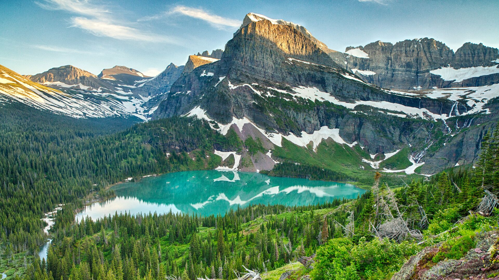
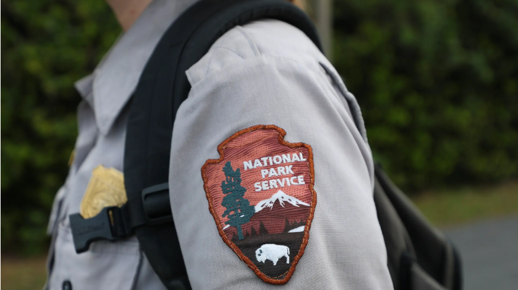

Overview
Introduction

Back in 1864, the Yosemite Grant was passed by President Abraham Lincoln, stating that Yosemite Valley and Mariposa Grove will be maintained for the public's use. (National Park Service, 2022) Then, following presidents passed bills creating more National Parks and allowing presidents to preserve land for educational, recreational, and historical purposes. For example, Theodore Roosevelt signed a law from Congress that gave the president power to create a National Monument on land that is controlled by the government. In August 1916, President Woodrow Wilson signed the Organic Act, legislation to create a new federal bureau responsible for protecting and conserving 35 national parks and monuments (NPS, 2022). Thus, the National Park Service was created.Today, there are over 400 sites and over 84 million acres are cared for by the National Park Service (NPS, 2022). This acreage spans over all 50 states, the Virgin Islands, Puerto Rico, the District of Columbia, American Samoa, and Saipan (NPS, 2022). These areas have been deemed of special recognition and deserve to be protected through legislation. Today, over 20,000 employees work for the National Park Service to preserve these lands and assist the hundreds of millions of people that visit these parks (National Park Service, 2026). In 2025, 323 million people visited these lands with 29% of them visiting national parks, that is approximately 93 million people (NPS, n.d.).
Over the years the interest from the public in these public lands has grown exponentially. Millions of people from all over the world travel to the United States to enjoy the various activities and attractions national parks have to offer. While the peaked interest from the public in getting outdoors is beneficial, this influx in visitation can cause strain on the National Park Service. With the current presidential administration, major budget cuts, forced resignations, and hiring freezes have left the National Park Service to struggle with the limited sources provided. There are questions that remain about what factors lead to overcrowding, which parks are gaining the most attraction in the past ten years, and what activities attract the most visitors. Insights from research into visitation patterns can help allocate where resources need to go and which factors are leading to visitation overcrowding. Research like this will help individuals such as those in the National Park Service, volunteers, stakeholders, and the public who visit these parks all year long. The reason as to why this research matters today is because the "Outdoor Boom" which started during COVID and peaked in 2023 created a massive surge in lifestyle changes based around nature-involved activities. This trend has left people spending more time outdoors, caring more about conservation, and putting their income towards outdoor recreation. So far, there has been research into visitor satisfaction, recreation management, tourism patterns, and accessibility. Through this research, national parks can become more efficient and further prepared to assist visitors while preserving the beauty and history of these lands.

As visitation continues to increase, understanding how people use national parks becomes increasingly important. Different parks offer different recreational opportunities, landscapes, amenities, and visitor experiences, which can influence the number and type of visitors they attract. There are parks that experience heavy crowding throughout the year, while others are less visited despite offering similar activities and attractions. This project can aid in examining these differences can provide valuable insight into what characteristics are associated with higher visitation and recreation activity. IF we can understand these patterns, we can help park managers better anticipate visitor needs and allocate resources more effectively. Increased visitation can place pressure on trails, campgrounds, visitor centers, and park staff; making logistics and resource management more important than ever. Identifying trends in visitation and recreation can also help determine which parks may require additional support or infrastructure improvements. Also, understanding visitor behavior and patterns can assist in handling public access along with conservation efforts. As national parks continue to grow in popularity, data driven research can provide valuable information for decision makers and stakeholders. Ultimately, studying visitation patterns can help ensure that these public lands remain protected, accessible, and enjoyable for future visitors and park lovers.
Research Questions
- Which parks receive the most visitors?
- Which parks are growing fastest?
- What seasonal patterns exist?
- How has COVID affected visitation?
- Are PNW parks becoming more crowded?
- What park characteristics predict visitation?
- Which parks are most vulnerable to overcrowding?
- Can future visitation be predicted?
- How do visitation trends differ by region?
- What role do different activities play in visitation growth?